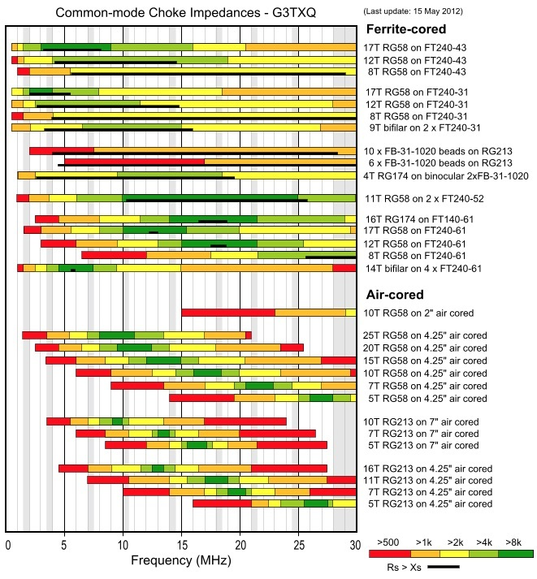

Recovered article. HTML body is from Common Crawl (text only); images came from the Sep 2022 iOS PDF:
Common Mode Currents.pdf ·
4 extracted images & links ·
4 of 4 images merged inline (aspect-ratio matched). Original src preserved on each
<img> as
data-original-src.
Contents: Basics; What To Do; What If You Don't?; The 160 Meter Issue;
Basics
In an ideal world, RF flows down the outer surface of the center conductor of the coax cable cable, and returns on the inner surface of the coax shield. When there is an imbalance in the antenna (for what ever reason), current will flow on the outside of the coax shield. This may not seem possible, but it is important to remember, unlike DC, RF current doesn't flow through the conductors, it flows on the surface of the conductors. The current which flows on the outer surface of the shield is called common mode current. In other words, it is the unbalanced current not returned within the coaxial cable.
This leads to a very important question. If the current isn't returned in the cable, where does it go? The answer is, it radiates! In fact, the amount of (RF) radiation from the coax cable is proportional to the common mode current flowing on that cable. However, there is a more insidious nature to common mode often overlooked, and that's the square law function of the devices which detect it. That's typically by a solid state junction—a diode in other words—but a better explanation is needed. A square law device is one that produces an output voltage or current that is proportional to the square of its input voltage or current. It should be obvious then, that a small amount of common mode can become a very big RFI problem.
 Every HF mobile installation will have some common mode current flow, with only the level in question. One way to measure the common mode level, is with an MFJ-854, RF current meter. This meter sells for about $130 delivered to your door. Speaking from experience, using this meter can be a real eye opener!
Every HF mobile installation will have some common mode current flow, with only the level in question. One way to measure the common mode level, is with an MFJ-854, RF current meter. This meter sells for about $130 delivered to your door. Speaking from experience, using this meter can be a real eye opener!
The level of common mode current flow is directly related to the presence and magnitude of the ground plane losses. There will always be some common mode in every mobile installation, and poor antenna mounting schemes exacerbate the issue. It should be evident that minimizing ground plane losses is a paramount undertaking, both from an efficiency standpoint, and in curbing both ingress and egress RFI.
Bonding is one way to do this. However, attaching a ground strap to the mounting bracket of a mobile antenna is not a substitute, or work around, for an incorrectly mounted antenna. Nor will it magically reduce the level of ground loss, or the level of RFI. If a ground strap appears to correct an RFI, SWR, or other problem, it means that something else in the installation is amiss! Fix it, don't patch it!
Ground losses cannot be measured directly, even though they are part of the input impedance of the antenna in question. Standard text sources state that mobile HF ground plane losses average between 2 and 10 ohms (10 through 80 meters). The truth is, the average is closer to 5 to 20 ohms (respectively), and may indeed be higher! Further, ground loss is not a linear function, and may be higher on 20 meters, than it is on 40 meters. If you're looking for a more technical explanation of what ground planes are, read the Grounds, RF &DC article.
And, if the antenna in question is remotely tuned, then read the Antenna Controllers article too.
☜Return☜
What To Do
 After proper mounting, the next solution to control common mode current is to install a choke. In this case, the choke is nothing more than a ferrite split bead, with a few turns of coaxial cable threaded through it. In fact, you can use the same type of split bead that you use for the motor control leads. That is, mix 31, and preferably the 3/4 ID units. They can be purchased from DX Engineering (et. al.) for about $30 per bag of five including shipping. These beads will allow 6 to 7 turns of RG58 or RG8X (as shown in photo). Note that the coax is not tightly wound around the choke. In this case, the diameter is about 3 inches. Any tighter, and the core could migrate and cause a short.
After proper mounting, the next solution to control common mode current is to install a choke. In this case, the choke is nothing more than a ferrite split bead, with a few turns of coaxial cable threaded through it. In fact, you can use the same type of split bead that you use for the motor control leads. That is, mix 31, and preferably the 3/4 ID units. They can be purchased from DX Engineering (et. al.) for about $30 per bag of five including shipping. These beads will allow 6 to 7 turns of RG58 or RG8X (as shown in photo). Note that the coax is not tightly wound around the choke. In this case, the diameter is about 3 inches. Any tighter, and the core could migrate and cause a short.
The resulting choke exhibits an impedance of about 2.2 kΩ at 10 MHz, which is typically enough for 80 through 10 operation. However, if you're really careful, you can wind 7 turns of RG8X through a 3/4 inch ID bead. The resulting choke impedance would be about 2.7kΩ at 10 MHz, and may even prove adequate for 160 meter operation (≈1 kΩ at 1.8 MHz). If you need more than that (trunk lip mounting?), simply snap on a second bead which will (almost) double the impedance. It should be noted that the impedance of the above chokes are primarily resistive at 10 MHz, an important design parameter. It should be noted that the impedance data presented above, is taken directly from the Fair-Rite catalog. The actual impedance my vary depending on the application.
The choke should be installed as close to the base of the antenna as possible. The last place to install them is inside the vehicle. After all, we want to keep the RF on the outside, not the inside of the vehicle. Fact is, the inside of a vehicle is almost as RF noisy as the engine compartment. Knowing this should be prima materia about where to mount a common mode choke.
How much choking impedance you'll need is not a cut and dried scenario, but there are factors which need to be considered. Those nifty appearing, clamp type mounts seemingly are the rage. However, the fact remains they add to the level of common mode current. Remember, the further away from the ground plane the base of the antenna is mounted, the greater the common mode currents.
It should be noted that antennas mounted through sheet metal via ballmounts will exhibit a bit less common mode than a similar height antenna fed outside the vehicle. Nonetheless, a proper choke is still required to minimize both egress and ingress RFI.

Here is an important fact to keep in mind: A multi turn choke will have much better common mode suppression than an equivalent one made up of a series of single turn ones. Further, in order to duplicate the total reactance of the choke shown above (7 turns, 3/4 inch ID, mix 31 split bead, ≈2.2 kΩ @ 10Mhz) on RG213, would require 49 similar split beads. That's about $275 worth, instead of just $6! However, there is another factor which needs to be considered. Impedance wise, it is imperative that the resistive value (in ohms) be larger than the inductive value (in ohms) if the choke in question is to be effective over a given bandwidth. Referring to the common mode impedance chart at right (courtesy of Steve Hunt, G3TXQ), the black line in the chart represents the resistive value of the represented chokes. In order to achieve this, the SRF (self-resonance frequency) needs to be within the frequency band of interest. To better understand this premise, read the verbiage accompanying the chart. Here's a hint: Compare the length and position of the black line in the chart with respect to the number of turns comprising the chart. Remember too, coax wrapped around a ferrite core is a tuned circuit.
☜Return☜
What If You Don't
Certainly there will be RFI issues especially if you're using an automatic antenna controller. And, the resulting RFI might be doing funny things to the electronics that you might not be aware of. However, the biggest factor is what we're doing to your receive capabilities. If common mode current can flow out as a radiated signal, then other signals (common mode noise) can get in the same way! Another way to look at this is, the coax acts like it is part of the antenna, instead of a feed line to the antenna.
What really matters is the S+N/N ratio (signal plus noise to noise, or SNR) said antenna system can induce in our receivers front end. While receiver dynamics are important, common mode noise exacerbates the issue. Fact is, in a mobile scenario without a common mode choke applied, the coax cable makes a better noise antenna than it does a signal antenna! The coax is, after all, inside the vehicle where most of the electrical noise is generated in the first place.
☜Return☜
The 160 Meter Issue
In the case of 160 meters and/or poor mounting techniques, it may be necessary to install more than one split bead. Referring to the photos above left, snapping on a second bead over the existing turns will almost double the total reactance. The reason, simply stated is this: The resistance to the flow of RF current is closely tied to the linear inch of material parallel to and surrounding the wire, and it goes up by the square of the number of turns. However, if you're trying to cover 160 through 10 meters with one choke, then here is one solution. Again referring to the photo above left, snap on a second bead, but only enclose the first four turns with the second bead. This will extend the bandwidth by about one half an octave.
☜Return☜
Home
 Every HF mobile installation will have some common mode current flow, with only the level in question. One way to measure the common mode level, is with an MFJ-854, RF current meter. This meter sells for about $130 delivered to your door. Speaking from experience, using this meter can be a real eye opener!
Every HF mobile installation will have some common mode current flow, with only the level in question. One way to measure the common mode level, is with an MFJ-854, RF current meter. This meter sells for about $130 delivered to your door. Speaking from experience, using this meter can be a real eye opener!
{kind=link}